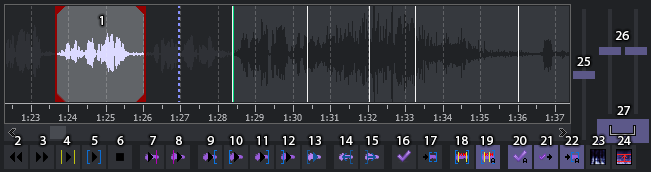

Praca z audio
Pole audio (audiobox)
Kainote ma wykres audio zarówno jako wykres falowy jak i spektrum, pozwala również na timignowanie zarówno dialogów jak i karaoke.

- Aktywna linijka, po prawej i lewej widać na ciemno oznaczoną poprzednią i następną linijkę.
- Odsłuchiwanie poprzedniej linijki.
- Odsłuchiwanie następnej linijki.
- Odsłuchiwanie aktywnej linijki (w przypadku karaoke odsłuchuje aktywną sylabę).
- Odsłuchiwanie aktywnej linijki nawet przy włączonym karaoke.
- Zatrzymanie odsłuchiwania.
- Odsłuchiwanie sekundy przed znacznikiem audio (długość odsłuchiwania można zmienić w opcjach).
- Odsłuchiwanie sekundy po znaczniku audio (długość odsłuchiwania można zmienić w opcjach).
- Odsłuchiwanie pół sekundy przed czasem początkowym.
- Odsłuchiwanie pół sekundy po czasie początkowym.
- Odsłuchiwanie pół sekundy przed czasem końcowym.
- Odsłuchiwanie pół sekundy po czasie końcowym.
- Odtwarza od aktywnej linii do końca audio.
- Wstawia wstęp.
- Wstawia zakończenie.
- Zapisuje zmiany.
- Ustawia aktualną linijkę widoczną na wykresie.
- Załączanie / wyłączanie tworzenia podziału karaoke.
- Załączanie / wyłączanie automatycznego dzielenia sylab.
- Automatyczne zatwierdzanie zmian.
- Automatyczne przechodzenie do następnej linii po zatwierdzeniu zmian.
- Automatycznie ustawia aktywną linijkę widoczną na wykresie.
- Włączanie / wyłączanie spektrum audio.
- Uwydatnianie widoczności głosu na spektrum audio, dobre szczególnie przy robieniu karaoke.
- Suwak skali poziomej.
- Suwaki skali pionowej audio i głośności, by używać osobno wyłączyć przycisk (27).
- Łączy / rozłącza suwaki (25 i 26).
Ustawianie timingu na audio polega głównie na odsłuchiwaniu audio i przemieszczaniu znacznika czasu początkowego i końcowego tak, by obejmowały daną wypowiedź.
Odsłuchiwanie aktywnej linijki można robić zarówno na przycisku (4-5), bądź klikając środkowym przyciskiem myszki (scroll).
Skróty do odsłuchiwania działają analogicznie jak przy podziale karaoke (przyciski 2 do 5), czyli strzałka w lewo - poprzednia linijka, strzałka w dół - aktywna linijka, strzałka w prawo - następna linijka, strzałka w górę - aktywna linijka z taką różnicą, że przy karaoke też odtwarza aktywną linię zamiast sylaby.
Przemieszczanie znaczników można robić w dwojaki sposób, klikając lewym w spektrum audio by przenieść znacznik początkowy, a prawym, by przenieść końcowy, bądź chwytając i przeciągając je myszą.
Gdy nie jesteśmy pewni czy ustawiliśmy dobrze początek i koniec można wydłużyć audio w poziomie dla większej dokładności suwakiem (25), bądź użyć przycisków (8 do 11) by odsłuchać audio przed i po starcie lub końcu.
Automatyczne przyklejanie do klatek kluczowych i poprzedniej oraz następnej linii można włączyć w opcjach audio i wtedy będzie działać zawsze, a wyłączanie ich następuje po przytrzymaniu shiftu. Przy wyłączonych tych opcjach włącza się je przytrzymując shift. Można to także zrobić korzystając ze skrótów klawiaturowych shift + lewo lub prawo.
Automatyczne przestawianie czasów następnej linii by była zaraz po czasie końcowym aktywnej linii (przydatne gdy wszystkie czasy są zerowe i ustawiamy je od nowa). Robimy to przytrzymując prawy alt podczas przesuwania czasu końcowego. Uwaga! Czas linii automatycznie ustawiany jest wtedy na 5 sekund.
Ustawienie wideo w pozycji wskazanej na wykresie audio można zrobić przytrzymując control i klikając lewym przyciskiem na wykresie audio.
Ogólnie zalecam załączyć opcję automatycznej aktywacji pola audio po najechaniu myszą, co zdecydowanie ułatwi pracę i ustrzeże nas przed przestawianiem czasu początkowego przy aktywacji okna.
Poza tym najlepiej stosować skróty klawiszowe, to bardzo ułatwia pracę i redukuje czas przeskoków myszką z jednego pola na drugie.
Po włączeniu spektrum przyciskiem (23) wykres audio wygląda następująco:

Klasyczny wygląd przeskok częstotliwości jest liniowy.

Wygląd nieliniowy, na którym o wiele lepiej widać częstotliwości głosu (po wciśnięciu przycisku 24).
Po włączeniu spektrum wykres pokazuje częstotliwość, im wyżej tym wyższa częstotliwość. Kolory czarny / ciemnoniebieski (przy zaznaczeniu) oznaczają ciszę, a biały najsilniejszy dźwięk. Może na początku wygląda to trochę kłopotliwie, lecz z częstotliwości łatwiej jest określić położenia wypowiedzi / śpiewu w przypadku muzyki czy innych zakłóceń. Przydatne szczególne przy timingowaniu karaoke.
W przypadku suwaka rozciągania w pionie powoduje zwiększenie intensywności białego koloru.
Obliczanie spektrum jest zużywa większej mocy procesora, gdy przewijanie suwakiem daje bardzo duże skoki spektrum najlepiej wczytać audio do pamięci RAM. Wtedy płynność się zwiększa, ale użycie pamięci może wzrosnąć o 1GB i więcej zależy od długości wideo, film używa ok 1GB.
Created with the Personal Edition of HelpNDoc: Easily create EBooks